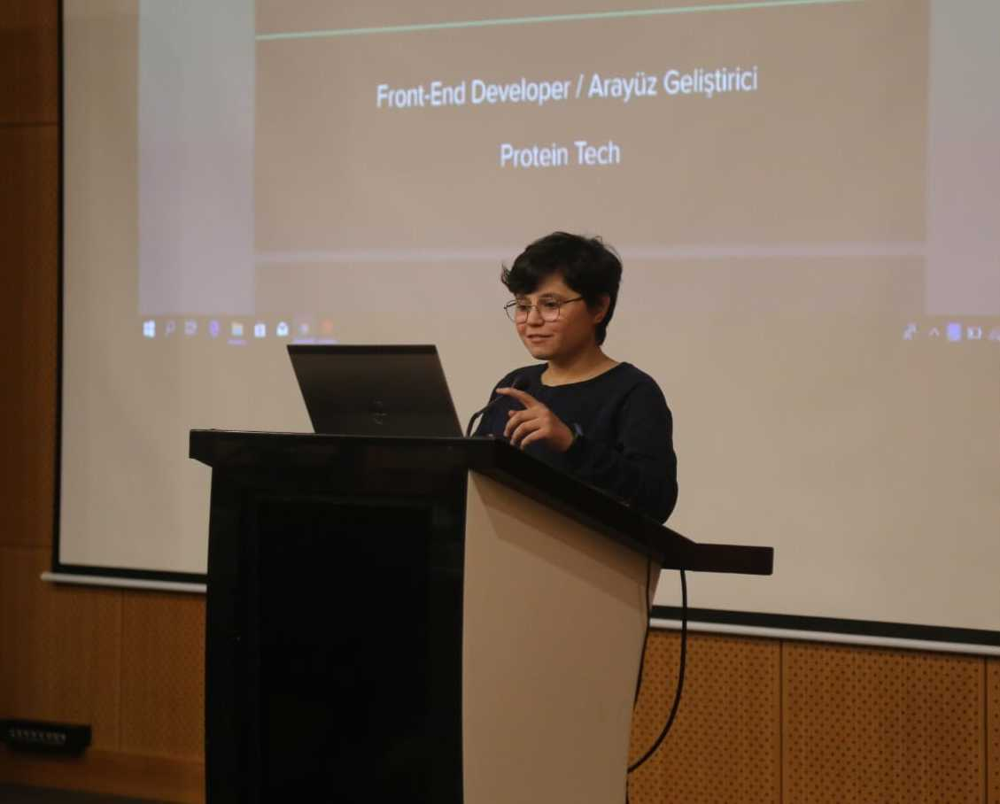

Hello Mate! My name is Hatice.
I'm a software developer and a mathematician. I have been working on software development since 2015. But I started professionally developing software in 2017. Most of this time has passed in the area of Front-End development.
I live in Turkey / Istanbul. I love the sea of Istanbul, it's make me happy.
I love build open-source code, learning new things, resolve difficualt and diffirent problems.